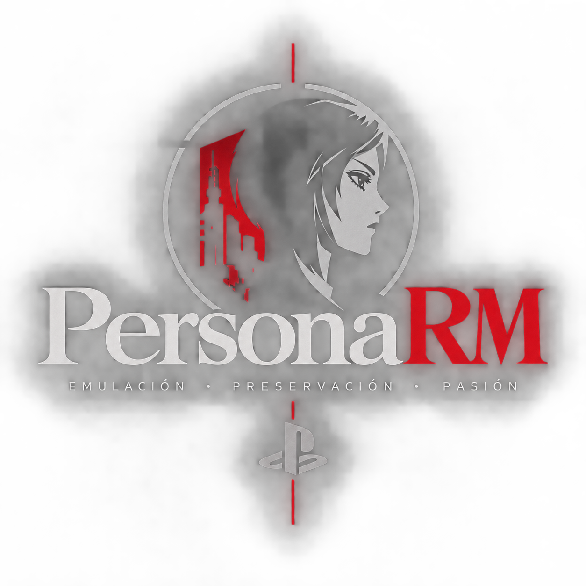

No game content
PersonaRM contains no game binaries, ROMs, or assets. The runtime is the only thing you download.

PersonaRMNative PC runtime · Persona 2: Eternal Punishment
PersonaRM is an open-source runtime and launcher for Windows and Linux, in active development. It rebuilds the PlayStation 1 hardware the game needs. Not playable yet, but the game's real executable already plays its intro, shows the title screen and reaches its first 3D scenes with dialogue.
PersonaRM contains no game binaries, ROMs, or assets. The runtime is the only thing you download.
Point PersonaRM at a disc image from a copy you own: .cue/.bin, .iso,
or .img.
Widescreen viewports, controller glyphs, turbo speed up to 16×, and instant quicksave, once the game boots.
R3000A interpreter with branch and load delay slots. It is the reference the rest is checked against.
GTE vector and matrix math. Partial today: about 6 of 22 commands.
1 MB VRAM at 1024×512 with GP0 and GP1 handling. Polygon drawing is not implemented yet.
Macroblock decoder, partial. The game's videos are 320×240 STR streams with XA audio.
24 voices with ADPCM decoding and stereo mixing. Pitch, envelopes and reverb are still to do.
ISO 9660 and raw CD-ROM XA images with .cue resolution, plus tools that map the game's data files.
Planned: 4:3 pillarboxed, 16:9, 21:9 UltraWide, and Fill.
Planned: keyboard, mouse, and gamepad, with PlayStation, Xbox, and Nintendo profiles.
A virtual 128 KB PS1 memory card, plus quicksave, in the prototype save manager.
PersonaRM is in active development and not playable yet. The plan: get the CPU provably correct, finish the machine core, boot the game, then compile its code ahead of time.
Current phase: step 3 of 6, first boot. The CPU and the machine core are done. Disc 1 now plays its intro videos with sound, shows the title screen and, on a new game, reaches the first 3D scenes with dialogue. Next: check the boot against a reference emulator, then player control.
You need the disc of Persona 2: Eternal Punishment, from a copy you own.
Build from source using the instructions in the README, or wait for a release.
Scan a folder and verify the image:
personarm --scan "/path/to/discs"
personarm --verify-disc "/path/to/disc1.cue"
personarm --portalSettings are stored in personarm_config.json. Run
personarm --help for all options.
A central engine routes memory through a KUSEG, KSEG0, and KSEG1 bus to RAM, scratchpad, GPU, SPU, and the controller SPI.
Read ARCHITECTURE.md →CMake 3.20+, C++17, and a Python test runner. Continuous integration runs on Windows and Linux.
Developer Guide →Bug reports, feature requests, and pull requests are welcome. Read the contributor rules first.
CONTRIBUTING.md →Licensed under GPL v3 or later. Fork it, study it, and improve it.
Browse the repository →Clone the repository, build it, and bring your own disc.
Open on GitHub